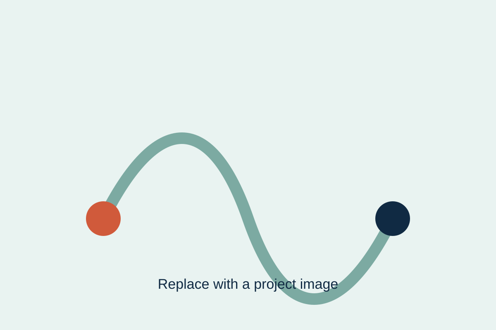

Featured project · 2026
Miniature reconfigurable exoskeletons
Write a two-to-three sentence summary covering the research challenge, the system you developed, and the intended significance.
- Role: Lead researcher / designer / developer
- Methods: Prototyping, user studies, qualitative analysis
- Outcome: Paper, demo, dataset, or deployed system